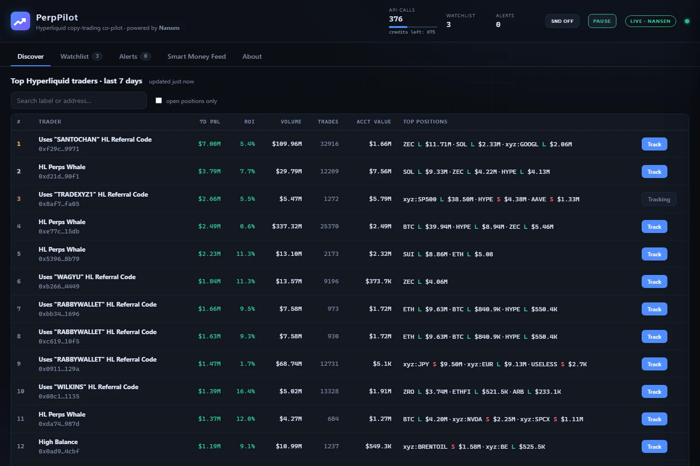
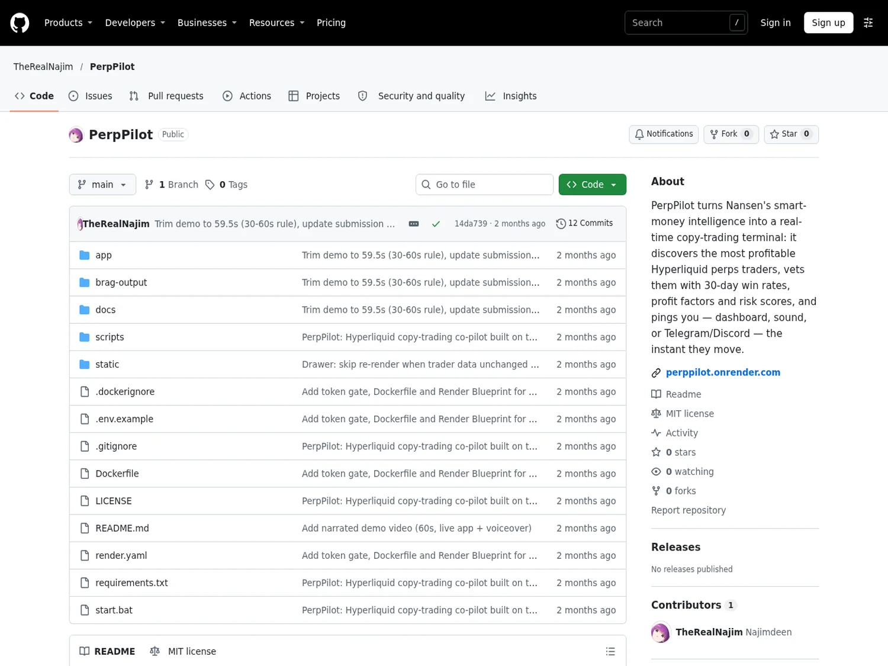

Case study · Najimdeen
PerpPilot
Find the Hyperliquid traders actually worth following, see whether their record holds up, and get told the moment they move — before the crowd does.

The problem
"Copy the smart money" is easy to say and hard to check. A leaderboard tells you who is up this week; it does not tell you whether that is one lucky position, how much risk they took to get there, or that they just flipped their whole book. The information existed — in raw position and trade endpoints — but nothing turned it into a decision.
The constraints
Every question costs an API credit, and the budget is not the user's. The whole design had to respect that: poll intervals tuned so a modest credit balance lasts hours, a pause switch that halts all calls while keeping the dashboard up on last-known data, and a header meter that counts every call issued. The buildathon also wants 1,000+ calls logged, which quietly argues against the caching you would normally reach for.
What we built
Four background loops — leaderboard, positions, trade history, and a smart-money feed — each with its own interval, feeding a dashboard that diffs live positions to fire alerts: open, close, flip, increase, decrease, and a near-liquidation warning that fires once on entering the danger zone rather than every poll. Two of those signals only exist because of the diff: a confluence alert when two or more tracked traders take the same side of the same coin within fifteen minutes, and a Copy Score that folds win rate, profit factor, trade count and momentum into one 0–100 number, minus a penalty for risk.

What was hard
Sharing the bill. The live app sits behind an access token, which looks unfriendly until you see why: every visitor shares one set of Nansen credits, so an open dashboard is an open wallet. The token gate locks every API route except the health check. The same thinking explains the pause button — it stops the burning without taking the data away. The honest cost is that a free host's disk is ephemeral, so the watchlist resets on restart; state lives on disk and does not survive a redeploy.
Where it landed
Running on Render, working in two modes: live against Nansen when a key is present, and a self-contained market simulator when it is not, so the whole UI is explorable without spending anything. The demo-data path is not a stub — it is the same code path fed by a simulated market, which is how the app is testable at all without a credit meter running.